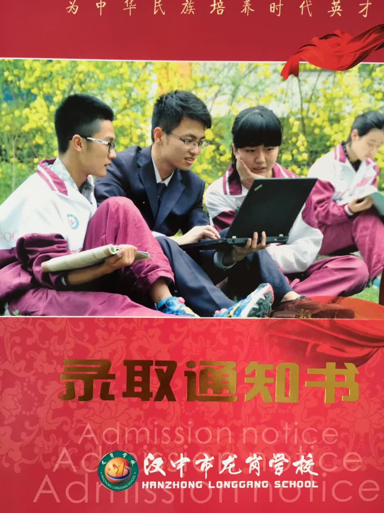
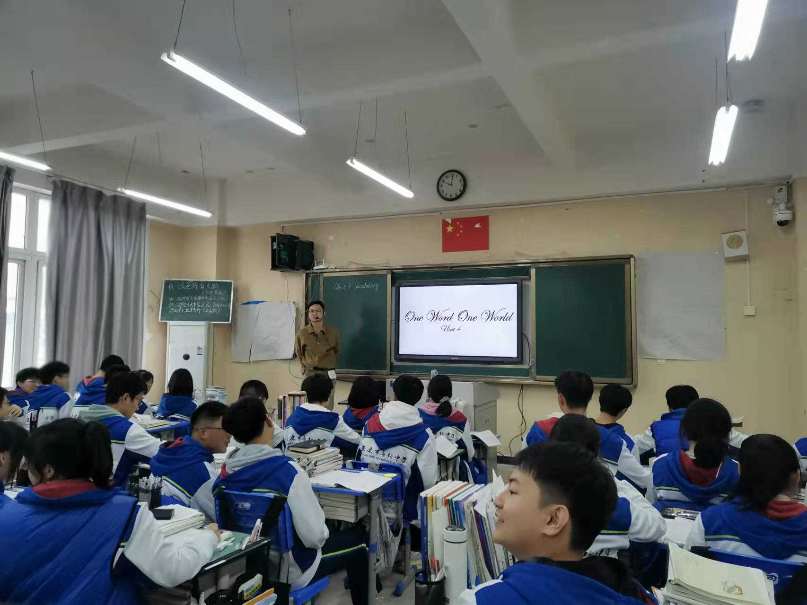

My portfolio
My career began either by chance or by fate, at New Oriental School,the biggest English training school
in China,where I spent the first 2 years working there before and after college,
learning and touching the most remarkable Chinese English teachers and teaching methods. This experience
led me plant the most developed concept of teaching in my mind, marking a significant
transition from student to teacher.
Hanzhong Longgang School (2 Years)

Owing to my fate's arrangement, I went back to my hometown to teach at Hanzhong Longgang School.
I began my teaching career with enthusiasm and dedication. Over two years, I
developed fundamental teaching skills, created engaging English lessons, and built strong connections
with students and colleagues. This experience laid the foundation for my teaching career in China.
Ankang Gaoxin Middle School (8 Years)

My eight years at Ankang Gaoxin Middle School were transformative. I refined my teaching methodology,
took on additional responsibilities, and deeply immersed myself in the Chinese education system. This
long-term experience helped me understand the nuances of difficult points of teaching English in China
and the importance of adaptable teaching methods.
New Horizons in Canada
Transitioning from teacher to student in Canada marks an exciting new chapter in my life-long journey.
Building upon my decade of teaching experience, I'm now pursuing further education to expand my IT
knowledge and explore new opportunities in Canada.